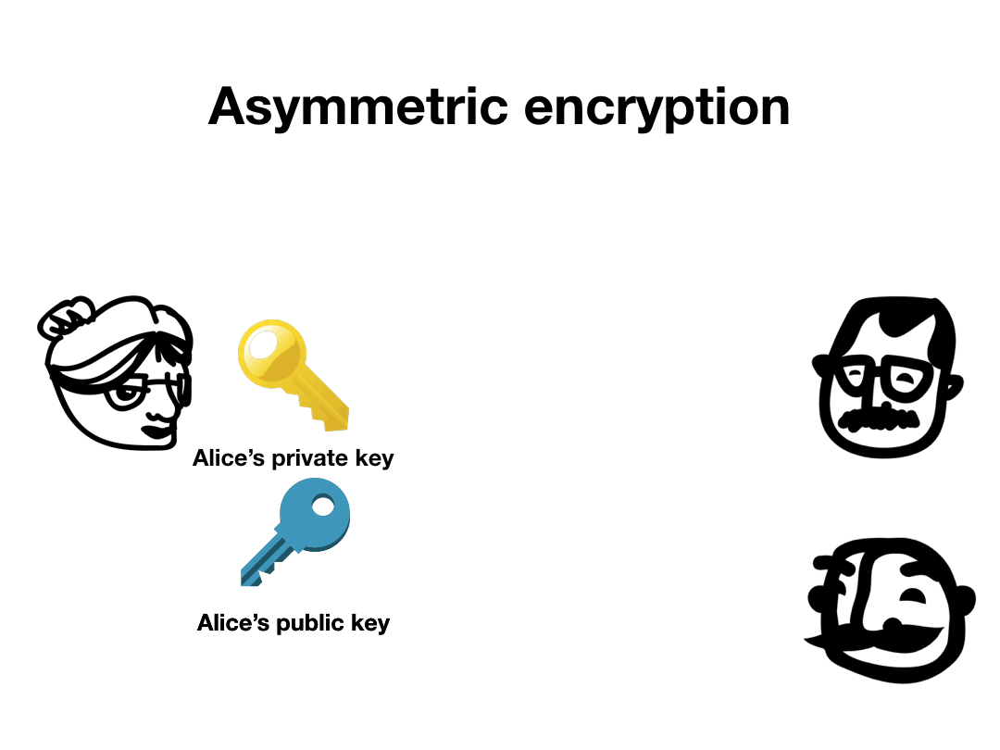
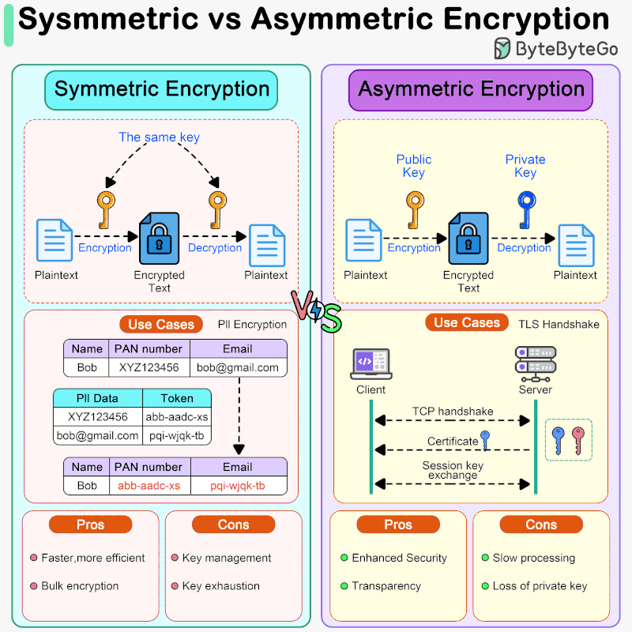

Criptografía de Clave Pública
¿Por qué necesitamos criptografía asimétrica?
Con cifrado simétrico, cada par de usuarios necesita su propia clave secreta.
Para N usuarios hacen falta N(N−1)/2 claves:
¿Y cómo distribuyes esas claves de forma segura
sin un canal seguro previo?
| Aspecto | Simétrica | Asimétrica |
|---|---|---|
| Claves | Una sola compartida | Par pública / privada |
| Velocidad | Muy rápida | 100–1000× más lenta |
| Distribución | Problema abierto | Resuelto |
| Autenticación | No directa | Sí — firmas digitales |
| Uso típico | Cifrado masivo de datos | Intercambio de claves, firmas |
Un par de claves matemáticamente relacionadas
La clave pública se deriva de la privada,
pero el proceso no se puede invertir en tiempo
razonable.
La seguridad descansa en problemas fáciles en una dirección, inviables en la otra:
De la teoría al estándar global

Garantiza: autenticidad · integridad · no repudio
| Uso | Algoritmo | Nota |
|---|---|---|
| Cifrado | RSA-OAEP | Mínimo 2048 bits; preferir 3072 |
| Firma | ECDSA / Ed25519 | Ed25519 recomendado hoy (SSH, TLS) |
| Intercambio | ECDH (X25519) | Estándar en TLS 1.3 |
| Post-Cuántico | ML-KEM / ML-DSA | Estándares NIST 2024 |
ECC-256 ofrece seguridad equivalente a RSA-3072 con claves 10× más pequeñas.
Nadie usa solo criptografía asimétrica para cifrar datos
La criptografía asimétrica es 100–1000× más lenta que AES.
Dónde ocurre esto hoy: TLS 1.3 · PGP · Signal Protocol · HTTPS

Donde han fallado sistemas reales
Una implementación correcta en papel puede filtrar información a través de tiempo de ejecución · consumo de energía · radiación EM.
Regla de oro: "Don't roll your own crypto."
Adversarios con recursos ya almacenan tráfico cifrado hoy para descifrarlo cuando existan computadoras cuánticas capaces.
Estándares NIST 2024 — diseñados para resistir ataques cuánticos:
TLS 1.3 ya soporta ML-KEM en experimentos. Chrome y Firefox lo están adoptando.